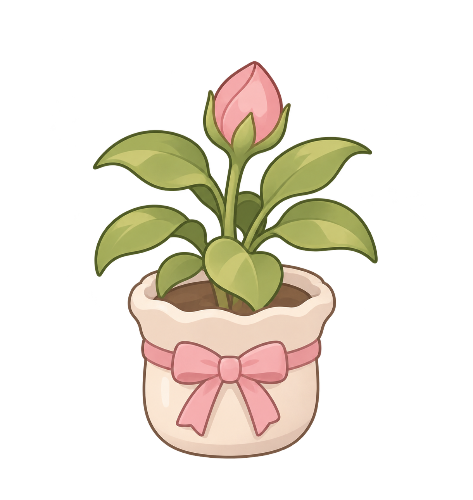
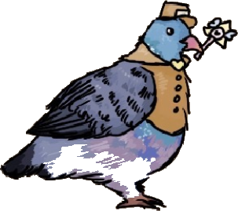

The room is listening
The Shy Library
The books are waiting.
✦
Field notes
0/5
Window open
field
notes
0/5
•••

❧
field
flora
☾
small
stories
birds
of here
drag slowly ↓

↺
Reset
Ⅱ
Pause
✎
Edit
☰
Menu
Choose an asset
Choose an asset…
Blue & yellow parrots
Green parrot pair
Sleepy owl
Head Librarian pigeon
Flower Messenger pigeon
Title and room status
Desk / table
Bookshelf
Hidden cubby
Flower pot
Field Notes
Millet cup
Green book
Gold book
Red book
Drag to move · arrow keys nudge · positions save automatically
Undo
Reset layout
Done